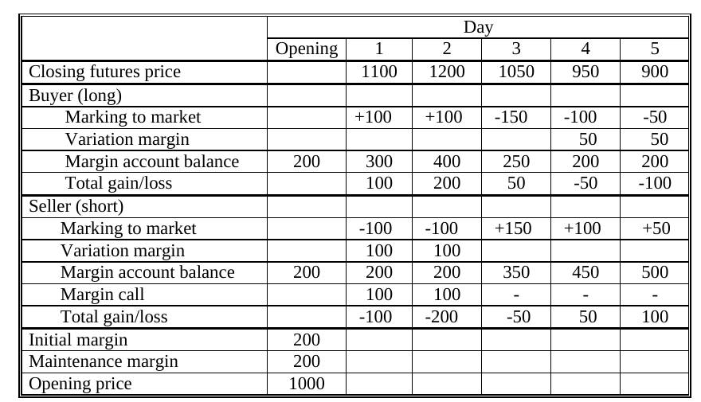

Derive margin-call and withdrawal price conditions
Useful first: Build daily margin accounts and reconcile trading result
Lesson outline
- 02IntroductionSee the main question, learning objectives and prerequisites.
- 03Key definitions and conceptsGet familiar with the important terms and notation.
- 04Problem 2: a short wheat contractThe company shorts 5,000 bushels at 250 cents per bushel, with $3,000 initial and $2,000 maintenance margin.
- 05Problem 6: two orange-juice contractsTwo long contracts each cover 15,000 pounds, so total exposure is 30,000 pounds.
- 06From daily result to an account balanceLet the stated quantities be the previous ending account balance.
- 07Connect the reasoningExplore connect the reasoning.
- 08Worked exampleFollow a complete application of the reasoning.
- 09Practise the reasoningWork through written tasks, with optional support and solutions.
- 10Check your reasoning: an offline quizCheck your choices and see feedback without a connection.
- 11Check your understandingReview the key distinctions and check what you can explain.
- 12Test yourself laterTry another prepared question before rereading.
- 13SourcesFind the materials and limits behind the lesson.
Introduction
In this lesson, derive margin-call and withdrawal price conditions.
2.1 What you’ll learn
- Given a long/short, quote units, exposure, initial/maintenance balances and withdrawal rule derive the strict margin-call price inequality, test equality
- Derive a withdrawal price condition for retaining initial or maintenance. Use a single uninterrupted price move before deposits/withdrawals; no tick grid is imposed unless stated.
2.2 Before you begin
Check the foundations
\(A=1200\) before settlement, loss \(500\), \(M=800\),\(R=1200\). Give \(A^{-}\), call and \(C\).
Reveal foundation explanation
\(700<800\), call, \(C=500\); equality \(800\) would not call. Needed because call inequalities compare a balance with a threshold, not profit with margin.
Key definitions and concepts
- Margin cushion: Initial balance minus maintenance balance before an adverse move.
- Call threshold: The price boundary at which the pre-funding balance reaches maintenance.
- Retained balance: The balance that must remain after a planned withdrawal.
Problem 2: a short wheat contract
The company shorts 5,000 bushels at 250 cents per bushel, with $3,000 initial and $2,000 maintenance margin. Convert the quoted price to dollars: \(F_0=2.50\) dollars per bushel. A price increase harms the short. Before other deposits or withdrawals its balance at a new settlement price \(F\) is
A call occurs when \(A<2000\), so
Thus an increase of more than 20 cents per bushel, beyond 270 cents, breaches maintenance. Exactly 270 cents leaves $2,000, at the threshold under the stated strict-below rule.
For a $1,500 withdrawal while retaining the initial $3,000, the account must first reach $4,500. The short needs a gain of $1,500, which requires a fall of \(1500/5000=0.30\) dollars per bushel. \(F\) must be 220 cents or lower.
If only maintenance must remain after withdrawal, \(A\ge3500\) suffices, so \(F\) must be 240 cents or lower. The question does not specify which withdrawal rule applies;
both conditional results are retained.
Problem 6: two orange-juice contracts
Two long contracts each cover 15,000 pounds, so total exposure is 30,000 pounds. Opening price is 160 cents ($1.60) per pound. Total initial margin is $12,000 and total maintenance is $9,000. A price fall creates a loss of \(300\) for each one-cent fall because \(30000\times0.01=300\). Before top-ups,
with \(F\) in dollars per pound. Maintenance is breached when
The call therefore follows a fall of more than 10 cents per pound, below 150 cents. Exactly 150 cents leaves the account at maintenance under the strict-below convention.
To withdraw $2,000 while retaining total initial margin, the account must gain $2,000. This requires a price rise of
Thus \(F\) must be at least \(1.666\overline6\) (\(166.\overline6\) cents), subject to the contract's allowed ticks, which the question does not specify. If retaining only maintenance is allowed, the original $12,000 already exceeds $9,000 by $3,000, so a $2,000 withdrawal is possible immediately.
More generally the condition is \(A\ge11000\), or \(F\ge1.566\overline6\). The two results reflect different retained-balance rules rather than different futures gains.
From daily result to an account balance
Let \(A_{t-1}\) be the previous ending account balance. Before any top-up or withdrawal, the new balance is
If a call restores a target \(R\), the deposit is \(C_t=R-A_t^-\) when \(A_t^-<M\); otherwise there is no call. With a withdrawal \(W_t\), the ending balance becomes
These equations are an explicit accounting synthesis of the source descriptions. A deposit increases the balance but does not create trading profit; a withdrawal decreases the balance but does not create trading loss. If a trader fails to meet a call, the exchange/clearing house can close the position through a reverse trade at that trader's cost.
6.1 The handout's five-day example

The complete source table has an opening price of 1,000 and both initial and maintenance margin equal to 200. Closing prices are 1,100, 1,200, 1,050, 950 and 900. The source uses a one-unit price-to-money normalization.
The long receives 100 on each of the first two days, then loses 150, 100 and 50. Its cumulative gain/loss is therefore 100, 200, 50, −50 and −100.
On day 4 the balance falls from 250 to 150 and a deposit of 50 restores it to 200. On day 5 the balance again needs 50.
The long ends with 200 in the account after depositing 100 beyond its initial 200, but its trading result is −100. The account balance is not its profit.
The short loses 100 on each of the first two days and posts 100 each time to restore 200. It then gains 150, 100 and 50, ending with 500. Total deposits were 400, so the account's net surplus over deposits is 100, equal to its trading gain. This compares the two positions' opposite cash transfers and illustrates why small initial deposits can require substantial later funding.
Connect the reasoning
- Put the quote in consistent units and write the signed balance before any intervening cash adjustment.
- Substitute the strict-below criterion: long \(F<F_0-\frac{I-M}{X}\); short \(F>F_0+\frac{I-M}{X}\). Derive rather than memorize the adverse direction.
- At equality the loss exactly consumes the \(I-M\) cushion, so \(A=M\) and there is no call under this model. If a contract tick grid were supplied, the first allowed price strictly beyond threshold would matter; no grid is invented.
- Withdrawal needs \(A\ge K+W\). Long requires \(F\ge F_0+\frac{K+W-I}{X}\); short \(F\le F_0-\frac{K+W-I}{X}\). A withdrawal can be possible immediately if initial cash already exceeds \(K\)+\(W\).
- A target for a call and \(K\) for withdrawal are distinct rules. Source exercises do not set one universal withdrawal policy, so report conditional results and the exact assumptions.
Worked example
Source wheat short: \(X=5000\) bushels,\(F_0=\$2.50\),\(I=3000\),\(M=2000\). \(A=3000+5000(2.50-F)\), call \(F>2.70\) (over \(270\) cents); equality leaves \(2000\). \(W=1500\): retain \(I\) needs \(A\ge 4500\to F\le 2.20\);
retain \(M\) needs \(A\ge 3500\to F\le 2.40\). Source orange long: \(X=30000\) lb,\(F_0=1.60\),\(I=12000\),\(M=9000\);
call \(F<1.50\). \(W=2000\) retain \(I\): \(F\ge 1.666666\ldots \); retain \(M\): \(F\ge 1.566666\ldots \) (possible immediately at \(1.60\)).
Rounding to a valid tick requires a supplied tick; none is given.
Decision points: adverse direction, strict boundary, required retained balance.
Practise the reasoning
Write your reasoning before revealing an explanation. Begin with support, then apply the ideas to another situation.
9.1 Written exercise 1
Hypothetical long \(X=1000\) units,\(F_0=\$2\),\(I=500\),\(M=300\),\(W=100\).
Solve the following:
- Fill \(A\) formula, strict call condition/equality, and withdrawal conditions retaining \(I\) or \(M\).
Show a hint
Pause before calculating or choosing an explanation:
- What quantities, actors or outcomes are being compared? Write their roles, units and dates beside them.
- Which condition decides whether the relationship applies? Check the relevant definition before using a formula or classifying the case.
- What would have to remain fixed for your comparison to be meaningful? Work through one link in the reasoning at a time.
- How could you check the direction, boundary case or alternative explanation before stating your conclusion?
A local draft for your own study.
Reveal explanation
Key: \(A=500+1000(F-2)\); call \(F<1.80\); equality A300 no call. RetainI requires A600→\(F\ge 2.10\). RetainM requires A400→\(F\ge 1.90\), already possible at opening. Supported full components; show subtraction if needed.
Allowed help: reveal the named definitions, then at most two prepared hints in Misconceptions and correction.
9.2 Written exercise 2
Hypothetical short covers \(4000\) bushels at \(200\) cents/bushel, \(I=2000\),\(M=1200\).
Solve the following:
- No interim deposits/withdrawals.
- Derive balance with dollar units, strict call price and equality result.
- For \(W=800\) derive \(F\) conditions to retain \(I\) and to retain \(M\), and check whether each permits withdrawal at opening.
- Do not invent tick rounding.
A local draft for your own study.
Reveal explanation
Explanation: \(F_0=2.00\); \(A=2000+4000(2-F)\). \(A<1200\to F>2.20\) (\(\$2.20=220\) cents equality \(A=1200\) no call). Retain \(I\): \(A\ge 2800\to F\le 1.80=180\) cents. Retain \(M\): \(A\ge 2000\to F\le 2.00=200\) cents, opening withdrawal allowed leaving \(1200\). Quote units, inequality/boundary and both \(K\) policies essential; tick absent, no extra rounding. All three components required.
9.3 Written exercise 3
Hypothetical two long contracts of \(5000\) lb each open \(150\) cents/lb, total \(I=3000\),\(M=2000\).
Solve the following:
- Before any funding derive \(A\), call/equality, and price conditions for \(W=500\) retaining initial versus maintenance;
- assess withdrawal at opening.
A local draft for your own study.
Reveal explanation
Explanation: \(X=10000\),\(F_0=1.50\),\(A=3000+10000(F-1.50)\). Call \(F<1.40\); equal \(140\) cents leaves \(2000\) no call. Retain \(I\) requires \(A\ge3500\to F\ge1.55\); retain \(M\) requires \(A\ge2500\to F\ge1.45\). Opening \(1.50\) supports withdrawal under \(M\) rule only; no supplied tick. All three components required.
Check your reasoning: an offline quiz
Choose one answer per question. Check individual answers or check the whole quiz. Each option includes feedback on the reasoning, and everything works offline.
Reveal explanation
The short loses 5,000(F−2.50); a loss strictly above 1,000 triggers the call.
Reveal explanation
Balance must reach 4,500, requiring a 1,500 gain: 5,000(2.50−F)≥1,500.
Reveal explanation
A continuous threshold and a discrete valid trading price are distinct; do not invent a tick grid.
Check your understanding
Avoid these mistakes: adverse direction reversed; call at equality; same withdrawal answer regardless \(K\). Correction: write \(A-W\ge K\) and calculate the balance at the claimed price.
- Given a long/short, quote units, exposure, initial/maintenance balances and withdrawal rule derive the strict margin-call price inequality, test equality
- Derive a withdrawal price condition for retaining initial or maintenance. Use a single uninterrupted price move before deposits/withdrawals; no tick grid is imposed unless stated.
Test yourself later
Return to these questions after a break, before rereading the explanation. Use a question you have not just viewed.
12.1 Review question 1
Hypothetical one long covers2000 units at300 cents, \(I=1600\),\(M=1000\),\(W=400\).
Solve the following:
- No earlier transfers.
- Derive dollar balance, strict call/equality, and withdrawal conditions for retaining initial and maintenance and test opening price.
A local draft for your own study.
Reveal explanation
Explanation: \(A=1600+2000(F-3)\). Call \(F<2.70\); equality \(270\) cents \(A=1000\) no call. Retain \(I\): \(A\ge 2000\to F\ge 3.20\). Retain \(M\): \(A\ge 1400\to F\ge 2.90\). At opening \(3.00\), only maintenance policy allows \(W=400\) (remaining \(1200\ge 1000\)). Units/sign, strict inequality and policies all required.
12.2 Review question 2
Hypothetical three short contracts of1000 units each open400 cents/unit, total \(I=2400\),\(M=1500\),\(W=600\).
Solve the following:
- Derive dollar A and strict call/equality.
- Derive both withdrawal conditions and whether \(W=600\) can be withdrawn initially under each policy.
A local draft for your own study.
Reveal explanation
Explanation: \(X=3000\),\(F_0=4\),\(A=2400+3000(4-F)\). Call \(F>4.30\); equality \(430\) cents \(A=1500\) no call. Retain \(I\): \(A\ge 3000\to F\le 3.80\). Retain \(M\): \(A\ge 2100\to F\le 4.10\). Opening \(4.00\) permits maintenance-only withdrawal leaving \(1800\), not initial policy. All three components required; no tick assumed.
Sources
Show materials and lesson scope
- 02_seminar.pdf, PDF p. 18
- L10(EssentialsOfFuturesTrading).pptx, slide 5–6
- L10(EssentialsOfFuturesTrading).pptx, slide 5
- 02_seminar.pdf, PDF p. 13
- 02_seminar.pdf, PDF p. 22
- FI01(Futures Contracts).doc, Ch. I, LibreOffice-rendered p. 4
- 02_seminar.pdf, PDF p. 12–13
- FI01(Futures Contracts).doc, Ch. I, LibreOffice-rendered p. 9
Numerical and contextual illustrations are hypothetical unless explicitly described as a reported result. Historical data, model assumptions and unresolved source differences retain their stated limits.
These exercises are for self-study. Viewing a prepared item or solution may make that item unsuitable as a fresh check in a tutor chat. This page does not record an assessed learning result.